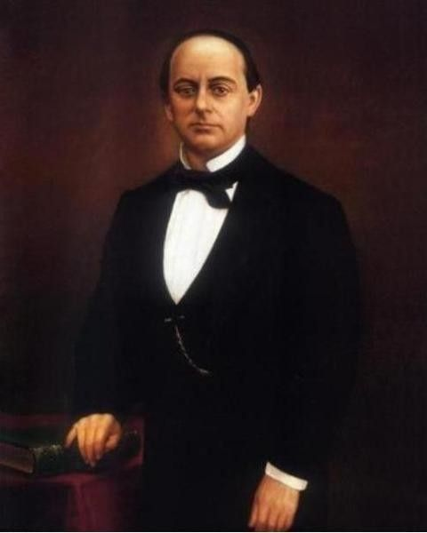

Personajes principales

Benito Juárez
Fue uno de los principales representantes del liberalismo mexicano. Impulsó las Leyes de Reforma y defendió la República.
Melchor Ocampo
Participó en el movimiento liberal y colaboró en la creación de reformas que transformaron la organización del país.

Sebastián Lerdo de Tejada
Político liberal mexicano que continuó las ideas de la Reforma durante su gobierno.